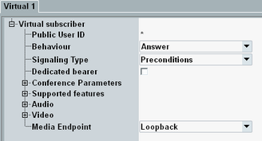

Initial situation: The DUT has registered to the IMS server. There is only one virtual subscriber profile "Virtual 1". The GUI shows the "IMS" tab of the "Data Application Control" dialog.
Press the "Virtual Subscriber" hotkey.
A dialog box opens.
Press the leftmost button to access the basic settings.

Configure the "Virtual 1" tab as follows:
Set the "Signaling Type" compatible to your DUT (call setup with or without SIP preconditions).
For all other settings, we use the default values, especially:
- "Public User ID" = "*"
All calls to public user IDs not assigned to any virtual subscriber go to this subscriber. - "Behavior" = "Answer"
- "Media Endpoint" = "Loopback"

- "Public User ID" = "*"
At your DUT, initiate a voice call to an arbitrary public user ID.
A new line is added to the "Events" area. After call setup completion, the status in that line equals "Established".

Perform an echo test. Speak a word into the microphone of the DUT. Listen to the echo at the loudspeaker of the DUT.
For further tests, you can create additional virtual subscriber profiles with a different behavior or a different media endpoint. Enter a different public user ID for each profile. To call a specific virtual subscriber, call its public user ID.